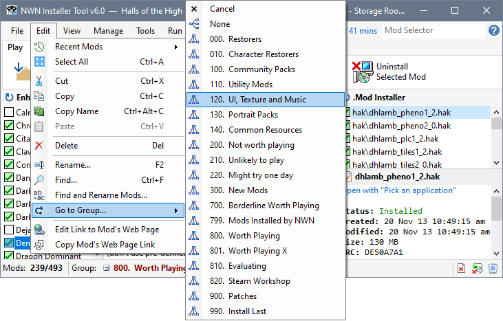
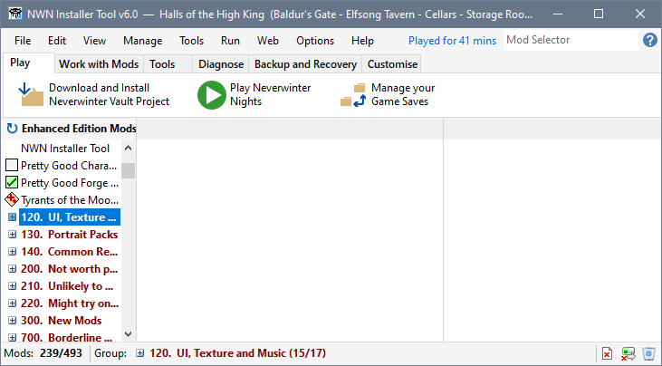

You can select a Group using Go to Group, which is available on the Edit menu and on a Mod's or Group's right-click menu.

Clicking the highlighted Group selects the Group in the Mod List.

Navigate to a Group
Use the Mod Selector to navigate to a Mod
Use Recent Mods to navigate to a Mod